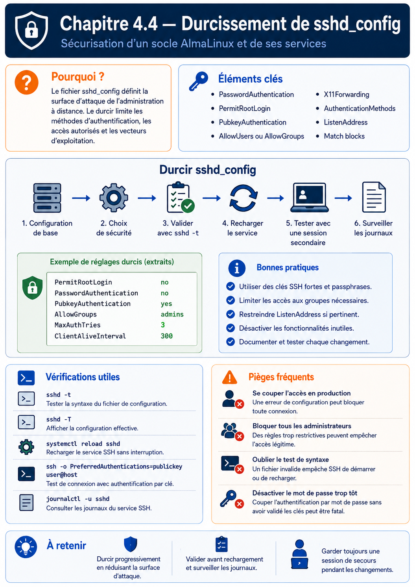

Chapitre 4.4 — Durcissement de sshd_config
Campagne 4 — SSH et accès distant
« Une authentification forte ne suffit pas si le serveur SSH accepte encore des mécanismes inutiles, des algorithmes obsolètes ou des comportements dangereux. Le véritable niveau de sécurité d'OpenSSH se trouve dans son fichier de configuration. »
Vous êtes ici
Partie I — Construire un socle sécurisé
Campagne 4 — SSH et accès distant
4.1 Architecture d'OpenSSH
4.2 Authentification par mot de passe
4.3 Authentification par clés
► 4.4 Durcissement de sshd_config
4.5 Bastion d'administration
4.6 Journalisation et audit SSH
4.7 Protection contre les attaques
4.8 Mission : administration sécurisée de Sentinel
Objectifs pédagogiques
À la fin de ce chapitre, vous serez capable de :
- comprendre le rôle du fichier
sshd_config; - identifier les principales directives de sécurité ;
- durcir progressivement un serveur OpenSSH ;
- comprendre l'impact réel de chaque paramètre ;
- construire une configuration adaptée à un environnement professionnel.
Pourquoi ce chapitre existe
Depuis le début de cette campagne, nous avons étudié :
- le fonctionnement interne d'OpenSSH ;
- l'authentification par mot de passe ;
- les clés publiques.
Mais toutes ces fonctionnalités ne sont que des possibilités offertes par OpenSSH. C'est le fichier : /etc/ssh/sshd_config qui décide réellement :
- quelles méthodes d'authentification sont autorisées ;
- quels utilisateurs peuvent se connecter ;
- quels algorithmes sont acceptés ;
- si root peut ouvrir une session ;
- combien de tentatives sont autorisées ;
- quelles fonctionnalités sont activées.
Autrement dit, la sécurité d'OpenSSH dépend essentiellement de ce fichier.
Théorie détaillée
Où se trouve la configuration ?
Sous AlmaLinux, la configuration principale est généralement située ici. /etc/ssh/sshd_config Le démon lit ce fichier :
- au démarrage ;
- lors d'un rechargement de configuration.
Après une modification, il est généralement nécessaire d'exécuter.
sudo systemctl reload sshd
ou
sudo systemctl restart sshd
Le premier recharge la configuration sans interrompre les sessions existantes. Le second redémarre complètement le service.
Une configuration déclarative
sshd_config est un fichier extrêmement simple. Chaque ligne correspond à une directive. Par exemple. PermitRootLogin no ou PasswordAuthentication no ou encore. Port 22 La syntaxe est volontairement minimaliste.
Directive
Espace
Valeur
Les lignes commençant par : # sont des commentaires.
Lire la configuration réellement utilisée
Une erreur fréquente consiste à ouvrir directement le fichier. Pourtant, certaines valeurs peuvent être héritées, ou provenir d'autres fichiers. La commande la plus fiable est :
sshd -T
Elle affiche : la configuration réellement utilisée par le démon. Par exemple.
permitrootlogin no
passwordauthentication yes
usepam yes
C'est généralement cette commande qu'utilisent les ingénieurs lors d'un audit.
Pour une règle conditionnelle, ajoutez un contexte fictif afin d'évaluer les blocs Match :
sudo sshd -T -C user=admin,addr=192.168.10.20,host=sentinel
Sur AlmaLinux, inspectez aussi les fragments de /etc/ssh/sshd_config.d/. Pour la plupart des mots-clés, OpenSSH conserve la première valeur obtenue dans le contexte considéré : un fichier chargé tôt peut donc empêcher un fragment ultérieur de produire l'effet intuitivement attendu.
Vérifier la syntaxe avant de redémarrer
Une autre commande est indispensable.
sshd -t
Elle vérifie uniquement :
- la syntaxe ;
- la cohérence de la configuration.
Aucun redémarrage n'est effectué. Cette habitude évite de nombreux incidents de production. Le workflow recommandé devient donc.
Jamais l'inverse.
Les directives importantes
Toutes les options de sshd_config n'ont pas le même impact. Certaines jouent un rôle majeur. Par exemple. PermitRootLogin PasswordAuthentication PubkeyAuthentication UsePAM AllowUsers MaxAuthTries LoginGraceTime X11Forwarding AllowTcpForwarding Au cours de ce chapitre, nous allons étudier chacune d'elles.
Premier principe : interdire la connexion directe de root
L'une des recommandations les plus anciennes reste toujours valable. PermitRootLogin no Pourquoi ? Parce que le compte : root est connu de tout le monde. Les robots d'attaque commencent presque toujours par essayer : root En interdisant sa connexion directe, on oblige les administrateurs à :
- se connecter avec leur compte personnel ;
- utiliser ensuite
sudo.
Nous retrouvons ainsi le principe du moindre privilège étudié dans la campagne 2.
Pourquoi préférer sudo ?
Imaginons deux approches.
Première
Deuxième
La seconde présente plusieurs avantages.
- identité de l'administrateur connue ;
- journalisation plus précise ;
- application des politiques sudo ;
- réduction du risque d'erreur.
C'est aujourd'hui la méthode recommandée par la plupart des guides de durcissement.
Désactiver les mots de passe
Une fois les clés publiques correctement déployées, la directive devient. PasswordAuthentication no Dès cet instant, OpenSSH refuse toute tentative basée sur un mot de passe. Même si le mot de passe est correct, la connexion sera rejetée. Cette mesure élimine immédiatement :
- les attaques par dictionnaire ;
- le brute force classique ;
- le password spraying.
C'est probablement l'un des durcissements les plus efficaces d'OpenSSH.
Attention : PasswordAuthentication no ne désactive pas à lui seul toutes les invites de secret. Si PAM fournit une authentification keyboard-interactive, contrôlez aussi KbdInteractiveAuthentication no dans la configuration effective. Une politique multifactorielle volontaire peut au contraire combiner des méthodes avec AuthenticationMethods; le but est de nommer précisément les méthodes autorisées, pas de supprimer PAM au hasard.
Conserver l'authentification par clés
Lorsque les mots de passe sont désactivés, la directive suivante devient indispensable. PubkeyAuthentication yes Elle indique simplement au serveur.
Accepter
les clés publiques.
Cela peut sembler évident, mais dans une infrastructure très sécurisée, certaines méthodes d'authentification peuvent être volontairement désactivées. Cette directive permet donc de contrôler explicitement le comportement du serveur.
Le rôle de UsePAM
Une option intrigue souvent les administrateurs. UsePAM yes Beaucoup pensent qu'elle ne sert plus lorsqu'on utilise des clés SSH. C'est faux. PAM intervient bien au-delà de la simple vérification d'un mot de passe. Il gère notamment :
- les restrictions de connexion ;
- les horaires autorisés ;
- les limites de ressources ;
- les montages automatiques ;
- certaines authentifications multiples ;
- les politiques de session.
Même avec une authentification exclusivement basée sur des clés publiques, PAM reste généralement indispensable. C'est pourquoi la valeur recommandée est presque toujours : UsePAM yes
Limiter les utilisateurs autorisés
Par défaut, OpenSSH autorise tous les comptes pouvant ouvrir une session. Dans une infrastructure professionnelle, on préfère souvent limiter explicitement les utilisateurs. Par exemple. AllowUsers tom admin Ou encore. AllowGroups admins Le principe devient alors.
Sinon.
Le serveur ne tente même pas l'authentification. Cette mesure réduit légèrement la surface d'attaque.
Limiter les tentatives d'authentification
Autre directive importante. MaxAuthTries Exemple. MaxAuthTries 3 L'utilisateur dispose alors de trois essais. Au-delà, la connexion est interrompue. Cette limitation ralentit les attaques automatisées. Elle ne remplace pas Fail2ban, mais elle constitue une première ligne de défense.
Réduire le temps disponible
Une connexion ouverte sans authentification consomme des ressources. OpenSSH limite donc ce délai. LoginGraceTime Par exemple. LoginGraceTime 30 Le client dispose de trente secondes pour s'authentifier. Au-delà. Déconnexion automatique. Cette mesure protège notamment contre certaines attaques cherchant à maintenir un grand nombre de connexions ouvertes.
Interdire les connexions sans authentification
Une directive mérite une attention particulière. PermitEmptyPasswords no Heureusement, elle est déjà désactivée par défaut sur AlmaLinux. Mais elle illustre une règle importante. Même si PAM autorisait exceptionnellement un mot de passe vide, OpenSSH pourrait encore le refuser. Plusieurs couches de sécurité travaillent ensemble.
Contrôler les tentatives simultanées
Une autre option très intéressante est. MaxStartups Exemple. MaxStartups 10:30:100 Cette syntaxe signifie approximativement :
- jusqu'à 10 connexions non authentifiées : tout est accepté ;
- ensuite, OpenSSH commence à rejeter certaines nouvelles connexions de manière probabiliste ;
- au-delà de 100 connexions en attente, toutes les nouvelles demandes sont refusées.
Schématiquement.
Cette option protège efficacement contre certaines formes de déni de service ciblant SSH.
Choisir le port d'écoute
Par défaut. Port 22 Beaucoup d'administrateurs le remplacent. Par exemple. Port 2222 Il est important de comprendre ce que cela apporte réellement. Cela ne renforce pas :
- le chiffrement ;
- l'authentification ;
- les algorithmes cryptographiques.
Cela réduit simplement le bruit généré par les robots qui balayent Internet en recherchant le port 22. Autrement dit, il s'agit davantage d'une mesure de réduction du bruit que d'une véritable mesure de sécurité. Un attaquant déterminé découvrira rapidement le nouveau port grâce à un simple scan.
Écouter sur une interface spécifique
Par défaut, OpenSSH écoute souvent sur toutes les interfaces réseau. Il est possible de restreindre cela. Par exemple. ListenAddress 192.168.10.5 ou. ListenAddress 127.0.0.1 Cette option est très utile lorsqu'un serveur possède plusieurs interfaces réseau. Par exemple.
Cette approche réduit considérablement l'exposition du service.
Une première configuration professionnelle
En réunissant les premières recommandations, nous obtenons déjà une configuration beaucoup plus robuste.
PermitRootLogin no
PubkeyAuthentication yes
PasswordAuthentication no
KbdInteractiveAuthentication no
UsePAM yes
PermitEmptyPasswords no
MaxAuthTries 3
LoginGraceTime 30
AllowGroups admins
Bien entendu, ce n'est pas encore une configuration complète. Nous continuerons progressivement à la renforcer tout au long de ce chapitre.
Désactiver les fonctionnalités inutiles
Un principe de sécurité revient constamment tout au long de cet ouvrage.
Tout ce qui n'est pas nécessaire doit être désactivé.
OpenSSH propose de nombreuses fonctionnalités. Toutes ne sont pas indispensables. Chaque fonctionnalité activée représente :
- du code exécuté ;
- une surface d'attaque supplémentaire ;
- des possibilités offertes à un attaquant.
L'objectif est donc de ne conserver que ce qui est réellement utilisé.
Le Forwarding X11
Historiquement, SSH permet de lancer une application graphique distante. Par exemple.
ssh -X serveur
Cette fonctionnalité repose sur : X11Forwarding yes Sur un serveur de production, elle est rarement utile. Au contraire, elle augmente la surface d'attaque. La recommandation est donc généralement. X11Forwarding no Dans notre projet Sentinel, nous administrons exclusivement un serveur sans interface graphique. Cette fonctionnalité sera donc désactivée.
Le TCP Forwarding
SSH est capable de transporter d'autres connexions TCP. Par exemple.
ssh -L 8080:localhost:80 serveur
Cette fonctionnalité est extrêmement puissante. Elle permet :
- d'accéder à une base de données distante ;
- d'ouvrir un tunnel HTTPS ;
- d'administrer un service interne.
Mais... Elle peut également être utilisée par un attaquant pour contourner certaines politiques réseau. La directive concernée est. AllowTcpForwarding Si cette fonctionnalité n'est pas utilisée, la recommandation est. AllowTcpForwarding no
Le Forwarding d'agent
Nous avons découvert précédemment : ssh-agent OpenSSH peut transférer cet agent jusqu'au serveur. Directive. AllowAgentForwarding Cette fonctionnalité facilite certains rebonds administratifs. Mais elle introduit également un risque. Un serveur compromis pourrait demander à l'agent distant de signer de nouvelles connexions. La clé privée ne quitte toujours pas le poste, mais l'attaquant pourrait utiliser temporairement l'agent. Dans un environnement très sécurisé, on préfère donc souvent.
AllowAgentForwarding no Sauf nécessité clairement identifiée.
Le Forwarding des ports
OpenSSH distingue plusieurs types de redirections. Local Forwarding Remote Forwarding
Dynamic Forwarding
(SOCKS Proxy)
Toutes ces fonctionnalités sont contrôlées par différentes directives. Avant de les autoriser, l'administrateur doit répondre à une question.
Qui en a réellement besoin ?
Si la réponse est : Personne. La fonctionnalité doit rester désactivée.
Compression
Une autre option souvent rencontrée. Compression yes À première vue, cela semble bénéfique. Pourtant, sur les réseaux modernes, le gain est souvent très faible. En revanche, la compression augmente :
- la consommation CPU ;
- la complexité logicielle ;
- l'exposition à certaines classes d'attaques historiques.
La recommandation actuelle est généralement. Compression no Sauf besoin particulier (liaisons très lentes par exemple).
Les variables d'environnement
SSH permet au client de transmettre certaines variables. Exemple.
LANG
LC_ALL
TERM
La directive concernée. AcceptEnv Accepter trop de variables d'environnement peut parfois modifier le comportement des applications distantes. Une bonne pratique consiste donc à n'autoriser que les variables réellement nécessaires. Par exemple. AcceptEnv LANG LC_* Et rien de plus.
Les bannières
OpenSSH peut afficher un message avant l'authentification. Directive. Banner /etc/issue.net Deux usages principaux existent. Le premier. Informer l'utilisateur. Par exemple.
Serveur Sentinel
Usage réservé
au personnel autorisé.
Le second. Répondre à certaines exigences légales ou réglementaires. Cette bannière ne renforce pas directement la sécurité technique, mais elle peut avoir une importance juridique.
Les délais d'inactivité
Une connexion dont le client a disparu doit être libérée. OpenSSH peut détecter un pair qui ne répond plus avec ClientAliveInterval et ClientAliveCountMax. Exemple.
ClientAliveInterval 300
ClientAliveCountMax 2
Le fonctionnement devient.
Cette configuration coupe un client injoignable ; elle ne mesure pas l'inactivité humaine. Un terminal parfaitement connecté répond aux messages de contrôle même si l'utilisateur ne tape rien. Pour imposer une durée d'inactivité, utilisez un mécanisme explicitement prévu par la version disponible — par exemple ChannelTimeout sur les versions qui le proposent — ou une politique de shell/session, puis testez son interaction avec les commandes longues, SFTP et les tunnels.
Respecter la politique cryptographique du système
Sur AlmaLinux, OpenSSH participe aux politiques cryptographiques globales. Avant d'ajouter manuellement Ciphers, MACs ou KexAlgorithms, affichez la politique avec update-crypto-policies --show et les valeurs effectives avec sshd -T. Une liste figée copiée depuis Internet vieillit rapidement, peut contredire la politique de la distribution et casser des clients légitimes. Si une exception de compatibilité est indispensable, documentez-la, bornez-la et préférez une sous-politique maîtrisée à un passage global en mode LEGACY.
Une configuration encore plus robuste
Notre configuration Sentinel commence désormais à prendre forme.
PermitRootLogin no
PubkeyAuthentication yes
PasswordAuthentication no
KbdInteractiveAuthentication no
UsePAM yes
PermitEmptyPasswords no
MaxAuthTries 3
LoginGraceTime 30
AllowGroups admins
X11Forwarding no
AllowTcpForwarding no
AllowAgentForwarding no
Compression no
ClientAliveInterval 300
ClientAliveCountMax 2
Nous obtenons déjà un niveau de sécurité très supérieur à celui des paramètres par défaut, tout en conservant une administration confortable.
Approfondissement
Le véritable durcissement consiste à supprimer les possibilités, pas à ajouter des protections
Lorsque l'on découvre sshd_config, la tentation est souvent d'ajouter toujours plus d'options. En réalité, la philosophie est inverse. Le meilleur durcissement consiste à supprimer tout ce qui n'est pas indispensable. Prenons deux serveurs.
Serveur A
✔ Mot de passe
✔ Clés SSH
✔ X11
✔ Agent Forwarding
✔ TCP Forwarding
✔ Compression
✔ Root
✔ SFTP
✔ Tunnel SOCKS
Serveur B
✔ Clés SSH
✔ PAM
✔ SFTP
Tout le reste désactivé
Le second serveur possède beaucoup moins de fonctionnalités. Il est donc :
- plus simple à comprendre ;
- plus simple à auditer ;
- plus difficile à attaquer.
En sécurité, la simplicité est presque toujours une qualité.
Le principe du moindre service
Depuis le début de cet ouvrage, nous retrouvons toujours la même idée. Nous avons étudié :
- le moindre privilège (
sudo) ; - les permissions minimales ;
- Firewalld ;
- systemd ;
- SELinux.
sshd_config applique exactement la même philosophie. Chaque directive répond à une seule question.
Cette fonctionnalité est-elle réellement nécessaire ?
Si la réponse est non, elle disparaît. Cette logique est bien plus importante que la valeur exacte d'une option.
Les recommandations évoluent
Une erreur fréquente consiste à rechercher sur Internet :
« La configuration SSH parfaite. »
Elle n'existe pas. Pourquoi ? Parce que les recommandations évoluent. Prenons un exemple. Il y a quinze ans, une configuration recommandait souvent. Protocol 2 Aujourd'hui, cette directive a disparu. Pourquoi ? Parce que SSHv1 n'existe plus dans OpenSSH. Autre exemple. Les algorithmes. ssh-rsa étaient longtemps la norme. Aujourd'hui, OpenSSH privilégie : Ed25519 Le durcissement est donc un processus vivant. Une configuration doit être régulièrement réévaluée.
Une bonne configuration est documentée
Dans les entreprises les plus matures, chaque directive importante est justifiée. Par exemple. PermitRootLogin no Justification.
Administration réalisée
via comptes nominatifs
et sudo.
PasswordAuthentication no Justification.
Infrastructure
100 % clés publiques.
AllowTcpForwarding no Justification. Aucun besoin métier identifié. Cette documentation facilite énormément :
- les audits ;
- les revues de sécurité ;
- les investigations après incident.
Concevoir la politique
Un architecte ne lit jamais sshd_config ligne par ligne. Il réfléchit en couches.
Chaque couche répond à une question différente. Par exemple. Firewalld. Qui peut atteindre SSH ? OpenSSH. Qui peut se connecter ? PAM. Qui est authentifié ? sudo. Qui peut devenir root ? SELinux. Que peut faire le processus ? Cette vision systémique est beaucoup plus pertinente que l'analyse isolée d'un fichier de configuration.
Le durcissement doit rester exploitable
Une erreur fréquente consiste à vouloir interdire absolument tout. Prenons un exemple.
PasswordAuthentication no
PubkeyAuthentication no
Le résultat est parfait... Personne ne peut plus se connecter. Le serveur est effectivement très sécurisé. Mais il est également inutilisable. Un architecte recherche toujours un équilibre entre :
Sécurité
+
Disponibilité
+
Exploitabilité
Le meilleur durcissement est celui qui protège sans empêcher l'administration normale.
Point de vue offensif
Face à un serveur SSH, l'attaquant réalise généralement une phase de reconnaissance. Il cherche notamment à répondre aux questions suivantes.
Chaque fonctionnalité activée représente une possibilité supplémentaire. À l'inverse, chaque fonctionnalité désactivée est une porte définitivement fermée. Un serveur fortement durci offre donc beaucoup moins d'angles d'attaque.
Le meilleur durcissement est souvent invisible
Lorsqu'un administrateur applique correctement les recommandations étudiées jusqu'ici, l'utilisateur ne remarque pratiquement aucune différence. La connexion continue de fonctionner normalement. En revanche, un attaquant observe immédiatement :
- l'absence de connexion root ;
- l'absence de mots de passe ;
- l'impossibilité de créer des tunnels ;
- la fermeture rapide des connexions anormales ;
- la réduction des fonctionnalités disponibles.
Le meilleur durcissement est donc souvent transparent pour les utilisateurs légitimes, mais très pénalisant pour un attaquant.
En entreprise
Dans les grandes infrastructures, sshd_config est rarement modifié manuellement sur chaque serveur. La configuration est généralement :
- versionnée dans Git ;
- déployée par Ansible ;
- validée lors des revues de code ;
- auditée régulièrement.
Le cycle de vie ressemble à ceci.
Cette approche garantit que tous les serveurs possèdent exactement la même configuration.
Les profils de configuration
Toutes les machines n'ont pas les mêmes besoins. Une entreprise définit souvent plusieurs profils. Par exemple.
Serveur de production
PasswordAuthentication no
KbdInteractiveAuthentication no
PermitRootLogin no
AllowTcpForwarding no
X11Forwarding no
AllowAgentForwarding no
Configuration extrêmement restrictive.
Bastion d'administration
PasswordAuthentication no
KbdInteractiveAuthentication no
PubkeyAuthentication yes
AllowTcpForwarding yes
AllowAgentForwarding yes
Certaines fonctionnalités sont autorisées, car elles répondent à un besoin métier.
Machine de développement
PasswordAuthentication yes
PubkeyAuthentication yes
X11Forwarding yes
Configuration plus souple, mais uniquement dans un environnement maîtrisé. L'important est que chaque choix soit justifié.
Auditer régulièrement la configuration
Une bonne configuration aujourd'hui peut devenir insuffisante demain. Les entreprises réalisent donc régulièrement des audits. Par exemple.
sshd -T
Puis comparaison avec la politique interne. Ou encore.
ssh-audit serveur
(ssh-audit est un outil open source spécialisé dans l'analyse des configurations SSH.) L'objectif est de détecter :
- les algorithmes devenus obsolètes ;
- les options oubliées ;
- les écarts entre les serveurs ;
- les régressions de sécurité.
Culture technique
Pourquoi sshd_config.d existe-t-il ?
Les versions récentes d'OpenSSH permettent d'inclure des fichiers supplémentaires. Par exemple. /etc/ssh/sshd_config.d/ Le fichier principal contient généralement. Include /etc/ssh/sshd_config.d/*.conf Cette organisation présente plusieurs avantages.
Par exemple.
10-authentication.conf
20-network.conf
30-hardening.conf
40-sentinel.conf
Cette approche facilite énormément la maintenance. Elle est aujourd'hui privilégiée dans les environnements industriels.
Les directives sont évaluées dans l'ordre
Contrairement à certaines idées reçues, OpenSSH ne traite pas toutes les directives simultanément. Les fichiers sont lus dans l'ordre et, pour la plupart des mots-clés, la première valeur obtenue s'applique. Les blocs Match ouvrent un contexte conditionnel pour un utilisateur ou une connexion ; ils ne constituent pas un mécanisme général de « dernière valeur gagnante ». Par exemple. Match User backup ou. Match Address 192.168.10.* Ces blocs permettent d'appliquer une configuration différente selon :
- l'utilisateur ;
- l'adresse IP ;
- le groupe ;
- l'hôte.
Nous les retrouverons lorsque nous parlerons des bastions.
Les valeurs par défaut changent avec les versions
Un autre piège fréquent. Une directive absente ne signifie pas toujours la même chose. Exemple. PasswordAuthentication Sa valeur par défaut peut évoluer entre deux versions majeures d'OpenSSH. C'est pourquoi les entreprises préfèrent souvent écrire explicitement les directives importantes, même lorsqu'elles correspondent déjà aux valeurs par défaut. Cette pratique rend la configuration :
- plus lisible ;
- plus prévisible ;
- moins dépendante des évolutions futures.
Piège classique
Modifier SSH depuis une connexion SSH
C'est probablement l'erreur la plus célèbre. Un administrateur connecté en SSH modifie : sshd_config Puis.
systemctl restart sshd
Une erreur de syntaxe s'est glissée dans le fichier. Résultat : le démon peut ne plus accepter de nouvelle connexion. Les sessions déjà établies survivent généralement grâce à leurs processus enfants, mais elles ne constituent pas un accès de secours garanti. La bonne pratique est toujours la même.
Cette méthode réduit quasiment à zéro le risque de verrouillage.
Confondre "Reload" et "Restart"
Deux commandes existent.
systemctl reload sshd
Recharge uniquement la configuration. Les connexions existantes continuent normalement.
systemctl restart sshd
Redémarre complètement le démon. Selon le contexte, certaines sessions peuvent être interrompues. En production, on privilégie généralement :
reload
chaque fois que cela est possible.
TP 1 — Construire un fragment de durcissement
Objectif
Construire progressivement une configuration SSH durcie et apprendre à la valider sans risque.
Étape 1 — Sauvegarder la configuration
Avant toute modification.
sudo cp /etc/ssh/sshd_config \
/etc/ssh/sshd_config.bak
Une sauvegarde doit toujours précéder un durcissement.
Étape 2 — Appliquer un premier durcissement
Modifier successivement. PermitRootLogin no MaxAuthTries 3 LoginGraceTime 30 X11Forwarding no Puis vérifier.
sudo sshd -t
Corriger les éventuelles erreurs.
TP 2 — Valider sans perdre l'accès
Étape 3 — Vérifier la configuration effective
Afficher.
sudo sshd -T
Comparer :
- le fichier de configuration ;
- la configuration réellement appliquée.
Identifier les éventuelles différences.
Étape 4 — Tester sans se verrouiller
Ouvrir une seconde session SSH. Valider que :
- la connexion fonctionne ;
sudofonctionne ;- les clés SSH fonctionnent.
Seulement ensuite, recharger le service.
sudo systemctl reload sshd
Cette procédure devra devenir un réflexe professionnel.
Mission d'ingénieur
Votre entreprise souhaite définir une configuration SSH de référence qui sera déployée sur plusieurs centaines de serveurs AlmaLinux. Vous devez produire un guide expliquant :
- quelles directives doivent être obligatoires ;
- lesquelles peuvent varier selon le type de serveur ;
- lesquelles sont interdites ;
- comment tester une modification sans interrompre la production ;
- comment contrôler automatiquement la conformité de tous les serveurs.
Ce document servira de base au futur rôle Ansible consacré au durcissement SSH de Sentinel.
Impact sur Sentinel
À l'issue de ce chapitre, le serveur Sentinel possède désormais une configuration OpenSSH conforme aux bonnes pratiques :
- authentification par clés publiques ;
- absence de connexion directe de
root; - réduction des fonctionnalités inutiles ;
- limitation des tentatives d'authentification ;
- contrôle des utilisateurs autorisés ;
- validation systématique des modifications.
Nous disposons maintenant d'un point d'administration robuste. Le chapitre suivant montrera comment aller encore plus loin en supprimant totalement l'exposition directe des serveurs grâce à un bastion d'administration.
Synthèse
sshd_configdéfinit le véritable niveau de sécurité du serveur SSH.- Le durcissement consiste principalement à supprimer les fonctionnalités inutiles.
- Toujours tester une configuration avec
sshd -tavant tout rechargement. - Utiliser
sshd -Tpour afficher la configuration réellement appliquée. - Préférer
reloadàrestartlorsque cela est possible. - Une configuration SSH doit être versionnée, documentée et déployée automatiquement.
- La simplicité et le principe du moindre service restent les meilleurs alliés de la sécurité.
Pour aller plus loin
Relisez sshd_config(5), la sortie de sshd -T et la politique cryptographique AlmaLinux avant de figer un profil. Le prochain chapitre réduit encore l'exposition en plaçant les serveurs derrière un point d'administration dédié.
← 4.3 — Authentification par clés · 4.5 — Bastion d'administration →
Schéma récapitulatif
